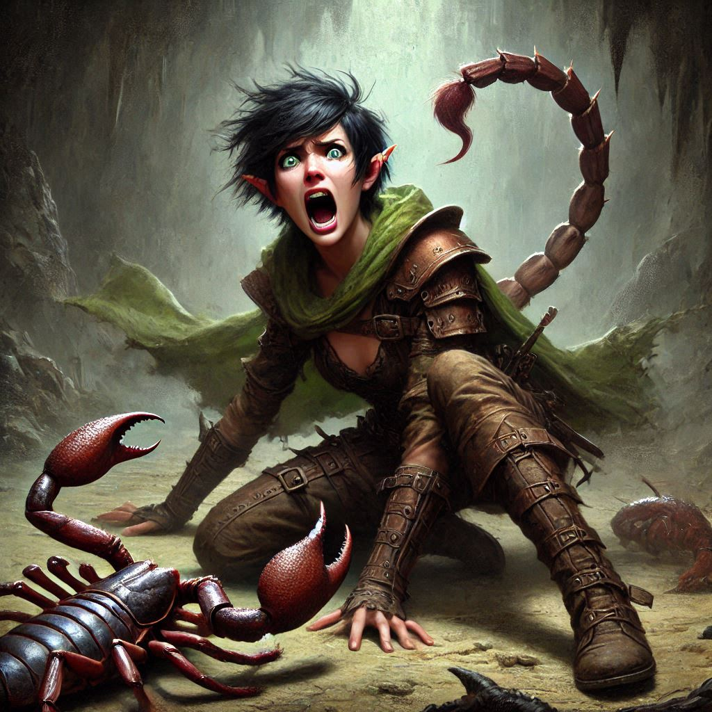

The Sting of Defeat
You glance back at Jorsh, bound by Liora’s spell, his dark eyes fierce with defiance. You’re torn, his recent words echoing in your mind: his reasons, his hatred for Varis, his desperation. But your loyalty to Yew—to Hawthorn, to your oath—anchors you. “Liora, stay with him. Keep him under control.”
Liora nods sharply, her eyes still glittering with the aftershocks of her spellcasting. Hawthorn, the princess, looks at you with a mixture of determination and quiet gratitude. Together, you steel yourselves and press forward, navigating the dark passages of Hemlock Caverns with only Hawthorn’s map to guide you.
The darkness deepens as you follow narrow tunnels, the air thick and oppressive. “If we take this passage,” Hawthorn says, her finger hovering over the map’s faded ink, “we’ll reach the chamber of portals before Varis.” But the sound of footsteps interrupts her, and shadows swarm the passage behind. Mercenaries from the Trade Ministry—Varis’s forces, brutal and relentless.
“We can’t fight them all,” you mutter, pulling Hawthorn forward. You bolt into an open chamber, ancient stone walls towering around you. But then you freeze, realizing the horror you’ve run into: monstrous, armored scorpions, their massive pincers snapping and stingers poised, blocking any hope of retreat.
The mercenaries surge in behind you, brandishing weapons, and in that instant, chaos unfolds. One of the scorpions lunges, its stinger flashing. Hawthorn shouts, parrying a strike, but the scorpion's poison-tipped tail jabs downward, striking you first, then her. A burning, numbing sensation floods your body, and you crumple to the cold stone floor, your muscles locked.
Beside you, Hawthorn collapses, her face twisted in agony. The mercenaries fare no better; as you lie there helplessly, the giant scorpions make short work of them, their armored tails striking down anyone who dares approach. The room fills with the smell of dust and death, sounds of bone crunching and metal clanging as the scorpions decimate Varis’s soldiers.
Vision blurring, you feel yourself fading. Then, through the haze, a familiar figure appears in the doorway. Jorsh. His form is limned in a dangerous light, his hand outstretched. Power surges from him, waves of fire streaking toward the scorpions. They hiss and writhe as flames engulf them, the fire charring their exoskeletons until they collapse, defeated.
Jorsh reaches you first. His face is a mask of pain and fierce resolve as he kneels beside you. “You don’t deserve to die like this,” he whispers, gently brushing a strand of hair from your face. You feel his magic pulse as he works to keep you alive, but even in your weakened state, you know it’s futile. The poison has done its work.
With a shaky breath, you manage, “Jorsh… you have to stop Varis.”
He meets your gaze, and for a moment, his mask slips. You see the boy he once was—the one you loved. “I will,” he says quietly, a promise heavy with loss.